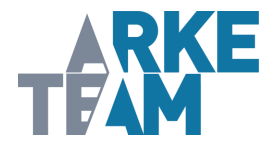

<ion-header>
  
  <ion-toolbar class="app-bar">
    <ion-title>NET'NDF</ion-title>
  </ion-toolbar>
</ion-header>
<ion-content padding>
  <ion-grid>
    <ion-row *ngIf="!resultDisplayed">
      <ion-col col-12>
        <ion-img [src]="image"></ion-img>
      </ion-col>
    </ion-row>
    <ion-row *ngIf="!imageSelected">
      <ion-col col-12>
        <ion-button (click)="captureImage()" color="#1775a3">
          Prendre une photo
        </ion-button>
      </ion-col>
    </ion-row>
    <ion-row *ngIf="!imageSelected">
      <ion-col col-12>
        <ion-button (click)="importImage()" color="#1775a3">
          Importer une image
        </ion-button>
      </ion-col>
    </ion-row>
    <ion-row class="capture" *ngIf="imageSelected && !resultDisplayed">
      <ion-card>
        <ion-card-header>
          <ion-card-title
            >Capture progress: {{ captureProgress }}%</ion-card-title
          >
        </ion-card-header>
      </ion-card>
      <ion-col col-12>
        <ion-button (click)="recognizeImage()" color="#1775a3">
          Reconnaitre
        </ion-button>
      </ion-col>
    </ion-row>
    <ion-row *ngIf="!imageSelected">
      <ion-col col-12>
        <ion-button
          (click)="goToHomePage()"
          color="#1775a3"
          class="logout-button"
        >
          Retour à l'accueil
        </ion-button>
      </ion-col>
    </ion-row>

    <ion-card *ngIf="workerReady && resultDisplayed ">
      <ion-card-header>
        <!-- <ion-card-title
          >Capture progress: {{ captureProgress }}%</ion-card-title
        > -->
      </ion-card-header>
      <ion-card-content> {{ ocrResult }} </ion-card-content>
    </ion-card>
    <ion-row *ngIf="resultDisplayed">
      <ion-col col-12>
        <ion-button (click)="resetPage()" color="#1775a3" class="logout-button">
          Retour
        </ion-button>
      </ion-col>
    </ion-row>
  </ion-grid>
</ion-content>
